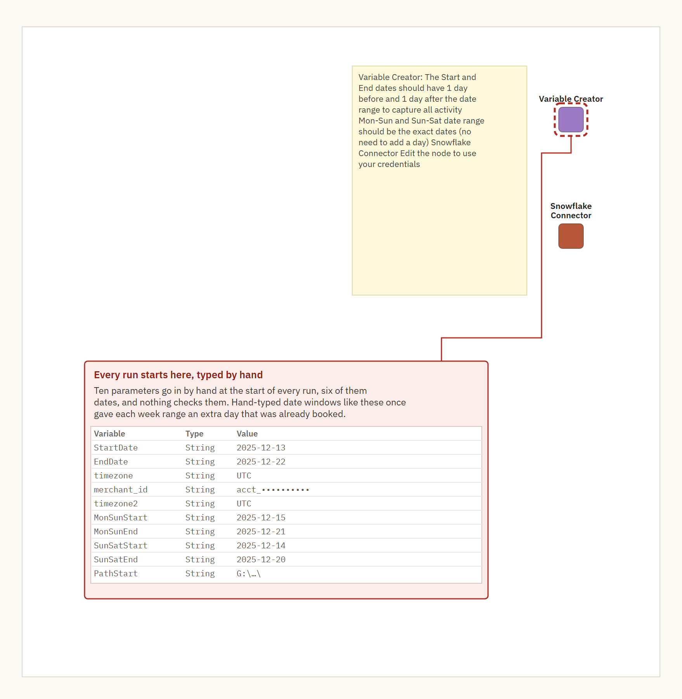
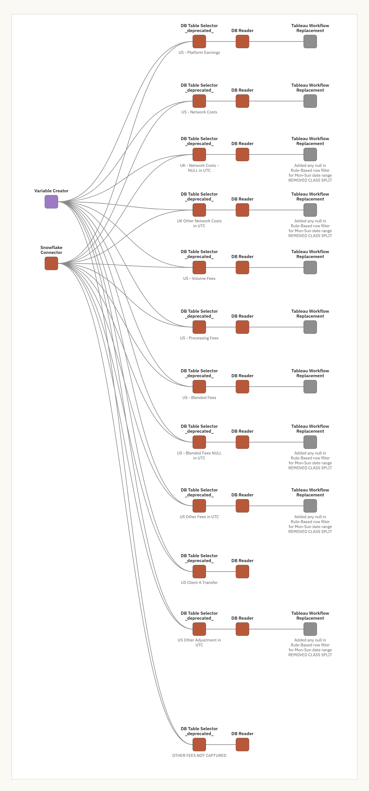
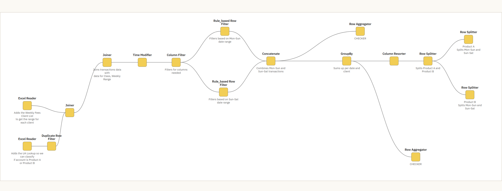
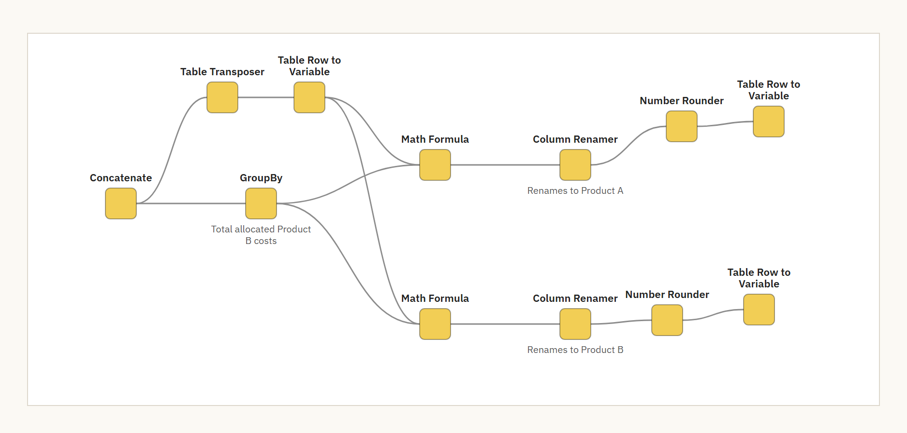
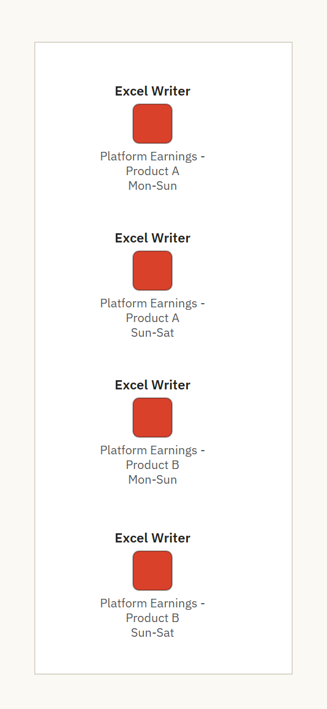
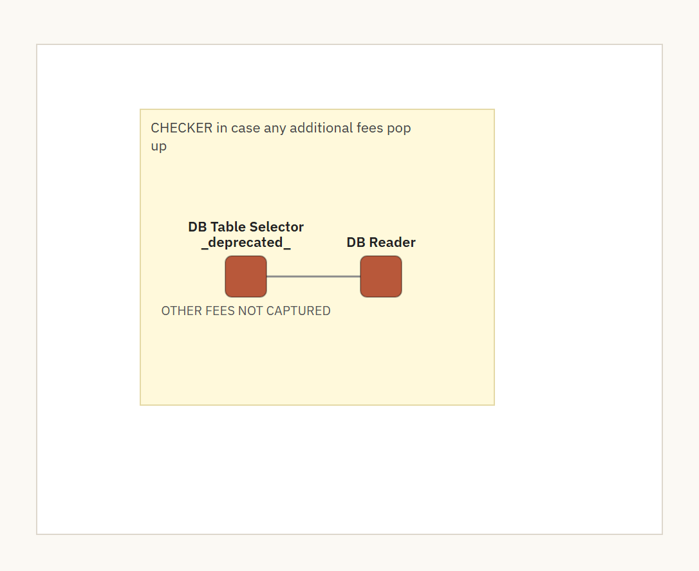
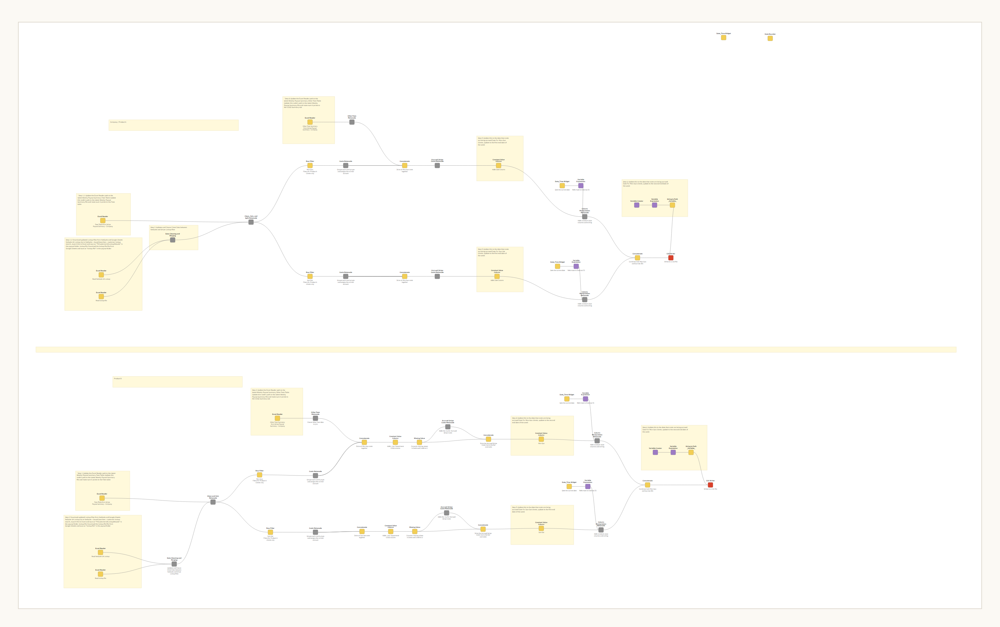

Deep dive · Stripe reconciliation
Inside the KNIME workflow
My first rebuild took our weekly Stripe reconciliation from 4 hours a week by hand, 6 at month end, to under 30 minutes. This is how it ran, what it got right, where it broke down and why I rebuilt it again.
What it had to do
Every week I had to put each Stripe fee and payment in the right client's week. Then I totaled it all by client and fee type, so it could go into NetSuite as a journal entry.
The hard part is the week. Some clients run Monday to Sunday and some run Sunday to Saturday, and they're spread across five timezones, so the same moment can fall in one client's week and not another's. That's hundreds of thousands of lines in a single week.
How it ran, step by step
Every run started with ten things typed by hand
Every run began in one node, where I typed ten parameters: the start and end dates for the queries, the Mon–Sun week, the Sun–Sat week, two timezones, the Stripe account and the folder the files went to.
The query dates had to sit a day outside the week on each side, so nothing close to midnight got cut off. The week dates had to be exact. I kept a note on the canvas so I'd remember which was which.
Nothing checked any of it, and all 12 queries read those two dates. Hand-typed date windows like these once gave each week range an extra day that was already booked.


Twelve queries off one connector
Twelve queries pulled the week out of Snowflake. Eleven pulled one kind of fee or payment each, and the twelfth was the checker further down. Every one of them read the same two hand-typed dates.
The queries moved each client's rows into that client's own local time before comparing dates. Rows that belong to no client stayed on UTC. The window was the padded one, a day early and a day late, so a filter further down could trim each row back to its own week.
SELECT
CONVERT_TIMEZONE('UTC',
CASE WHEN ca.timezone = 'US/Pacific-New' THEN 'US/Pacific'
ELSE COALESCE(ca.timezone, 'UTC') END,
ari.activity_at::timestamp_ltz) AS IncurredAt_Local,
ari.balance_transaction_reporting_category,
ari.connected_account_id,
ari.currency,
SUM(ari.amount) / 100 AS amount
FROM activity_report_itemized ari
LEFT JOIN connected_accounts ca ON ari.connected_account_id = ca.id
WHERE ari.balance_transaction_reporting_category IN ('network_cost')
AND ari.merchant_id IN ('$${Smerchant_id}$$')
AND DATE(/* the same local-time conversion */)
BETWEEN '$${SStartDate}$$' AND '$${SEndDate}$$'
GROUP BY ...That put the timezone rule in the query, in one place I could read, instead of in a Tableau calculated field.
All 12 of those database nodes are now flagged deprecated by KNIME, so each one is something else to replace.


Trimming every row back to its client's week
Ten of the queries handed their rows to their own copy of one sub-workflow. I named it "Tableau Workflow Replacement," because it did what the Tableau calculated fields used to do.
Inside, it joined the client list to find each client's week, then filtered the Mon–Sun clients and the Sun–Sat clients separately and totaled each day by client. Last, it split the rows between our two products.
There were ten copies of it, so any change to the logic had to be made ten times.


Splitting shared costs between two products
Two products ran through one Stripe account. After one was sold, its transactions kept running through the account while its clients moved over, so they had to be separated in the books and paid over to the buyer. Some costs came in as one pile and had to be split. The allocation sub-workflow worked out each product's share and passed the percentages on to the rest of the run.


Writing the files
Every branch ended in Excel. The writer sub-workflows saved a separate file for each product and each week type into shared folders, and the US workflow alone had 29 Excel writers.
Every one of those paths was typed into the workflow. I pointed them at our shared drive so I could send the workflow to someone else, and they only had to update their own Snowflake credentials.


A checker for fees I didn't know about
The twelfth query was a branch of its own. It only returns fees outside the nine categories the rest of the workflow handled. My note on it says "in case any additional fees pop up."
The checker was catching the per-authorization fee, but it never made it into the summary's other-fees line, so the payout summary had been leaving it out. A review in July found the gap, and it's fixed now.
The checker also sat outside the main workflow, so it only ran when someone ran it on its own. Once the weekly run was handed over, it wasn't being run every week, and that's how the fee went unbooked until my cost dashboard surfaced it.


Building the NetSuite import
A separate workflow turned the week's files into the journal entry import. It maps every fee type to its ledger account and splits each amount into debit and credit by its sign.
Every line gets an External ID, so if the import runs twice NetSuite updates it instead of booking it twice.
This one took its dates from date pickers instead of typed text, which is the fix the payout workflow never got. The notes on its canvas list what still had to be done by hand each week, like pointing each reader at the latest payout summary and downloading fresh lookup files.


What it got right
- The week went from 4 hours by hand, 6 at month end, to under 30 minutes door to door. The run itself took 5 to 15 minutes once it started.
- The timezone rule was deliberate. Any cost with a connected account ID gets the client's timezone, and anything without one stays on UTC. That's the matching principle. Our revenue is booked from each client's weekly reconciliation, which runs on the client's own time, so cutting their costs on the same local day keeps cost of sales matched to that revenue. All 12 queries apply it to every row the same way.
- Client attribution moved out of spreadsheet formulas and into the query, and later, in a separate cost workflow, I collapsed nine categorization queries into one.
- Re-running the import updated lines instead of posting them twice.
- Running it next to the manual process showed the manual process had been wrong in places for months, and nobody had noticed.
Where it broke down
- Ten parameters were typed by hand every run, dates included, and nothing checked them.
- Every file path was typed into the workflow, and anyone running it had to set up their own Snowflake credentials first.
- The checker sat outside the main workflow, so it only ran when someone ran it on its own, and once the weekly run was handed over it wasn't being run every week.
- A re-run overwrote what was booked, so there was no way to see what we booked, what Stripe says now and what moved in between.
- The same logic lived in ten copies.
- All 12 of its database nodes are deprecated.
- A reconciliation query's activity window was too narrow, and it had been missing backdated Stripe entries since January, about $110K of them.
Why I rebuilt it
- KNIME was moving to a paid subscription the next year. It isn't expensive, but it wasn't in the budget.
- Every run still depended on hand-typed dates, and hand-typed windows did give one booked week an extra day.
- It couldn't show what changed after a week was booked. That's what the true-up view does now, and it surfaced backdated entries the old reconciliation had missed.
- New Stripe fee types were caught by a side branch instead of by the process itself. The console built to replace it checks that every category in the source is declared.
The Python console I built to replace it is the next part of the case study.
How these numbers are sourced
From the workflow files, "US Payout Summary - CLEAN.knwf" and "FN - Stripe Fees NetSuite import.knwf", and the build spec written against them: the ten parameters and their values, the twelve queries and the dates they read, the timezone rule every query applies to each row, the deprecated database nodes, the ten copies of one sub-workflow, the 29 Excel writers and their hardcoded paths, the checker branch, the import builder's mapping, External IDs and date pickers, and the notes on its canvas. The SQL is shortened here. The account id and folder path are masked, and product and client names in the drawings are replaced.
From the build spec written against the workflows: the widened window, the UK queries following the same timezone rule, client attribution in the query, the nine queries collapsed into one, and the overwrite on re-run.
My own account: what the week involved, the hundreds of thousands of lines, the product split and the sale, the timings, the per-authorization fee, the parallel run, the date error the console caught, the subscription, the true-up view and the handover.
Rounded from Stripe's figures, so stated as an estimate: about $110K of backdated entries missed.